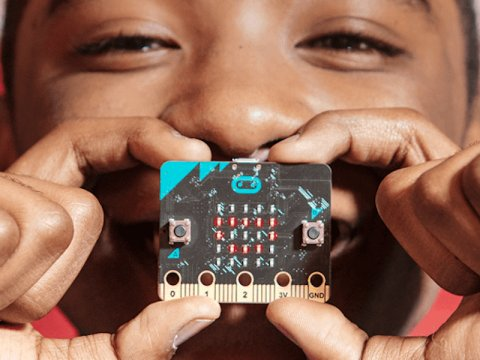

BBC micro:bit

Que el fenómeno Internet of Things (también conocido en su forma abreviada como IoT) está de moda es más que un hecho, este nuevo concepto está aquí para quedarse, y por bastante tiempo.
Pensaréis, ¿y todo esto, a qué viene?, pues esta semana se celebra el EuroPython, que por segundo año consecutivo se emplaza en Bilbao (bonita ciudad donde las haya, y que recomiendo visitar si no lo habéis hecho aún), y en esta edición, además de entregar la bolsa de bienvenida de rigor, han regalado una BBC micro:bit, no sin antes haberla dado a conocer en varias charlas, que pronto estarán disponibles en vídeo.
Este nuevo "micro-ordenador", que lleva poco tiempo entre nosotros, apenas unas meses, diseñado por la BBC con la colaboración de Microsoft, Samsung, ARM, la Python Software Foundation, entre otros, está pensado para iniciar en la programación a niños de entre 11 y 12 años (y para el entretenimiento de los no tan niños :P), a medio camino entre Arduino y Raspberry Pi, y en tan solo 4cm x 5cm, disponemos de:
- Procesador ARM 16Mhz
- 16Kbytes de RAM
- Matriz de 5x5 leds programables
- Acelerómetro
- Brújula
- Bluetooth
- Dos botones programables
- Alimentación vía puerto MicroUSB
- Pines de expansión
Aquí una imagen donde se pueden ver como es el dispositivo y sus características más en detalle:

Y lo mejor de todo, que puede programarse en Python 3, bueno, no es así realmente, es una implementación llamada MicroPython, que no es más que un subconjunto de la librería estándar de Python, pero optimizada para funcionar en microcontroladores de la cual se realizó una adaptación para que funcionase en este nuevo dispositivo.
La cosa tampoco queda ahí, gracias a la conectividad Bluetooth, y mediante una aplicación disponible para Android e iOS, podremos controlar nuestra micro:bit, y poder "jugar" sin la necesidad de un ordenador, algo muy interesante.
Personalmente, aunque dispongo de una Raspberry Pi, que únicamente utilizo como mini-servidor: DNS, DHCP, VPN, etc., no he ido más allá para sacarle partido, pero en el caso de la micro:bit, después de leer un poco sobre ella, y descubrir la facilidad de uso que tiene (recordemos, está pensado para ser usado por niños), he caído en la tentación, y ya tengo en mente varios proyectitos, que espero poder abordar, y por supuesto, compartir como Software Libre.
Por otro lado, también puede servirnos para aprender a programar, o aprender Python para el que no conozca el lenguaje, todo esto de una forma divertida realizando pequeñas animaciones con los leds, pequeños juegos gracias a la capacidad interactiva que nos brindan los dos botones, o lo que vuestra imaginación os dicte...
Algo que no he dicho, y que muchos os preguntaréis, ¿y su precio?, pues unos 17€ aproximadamente, nada desorbitado para el partido que personalmente creo le podemos sacar. Así que ya no hay excusa para no subirse a la ola del Internet of Things ;).